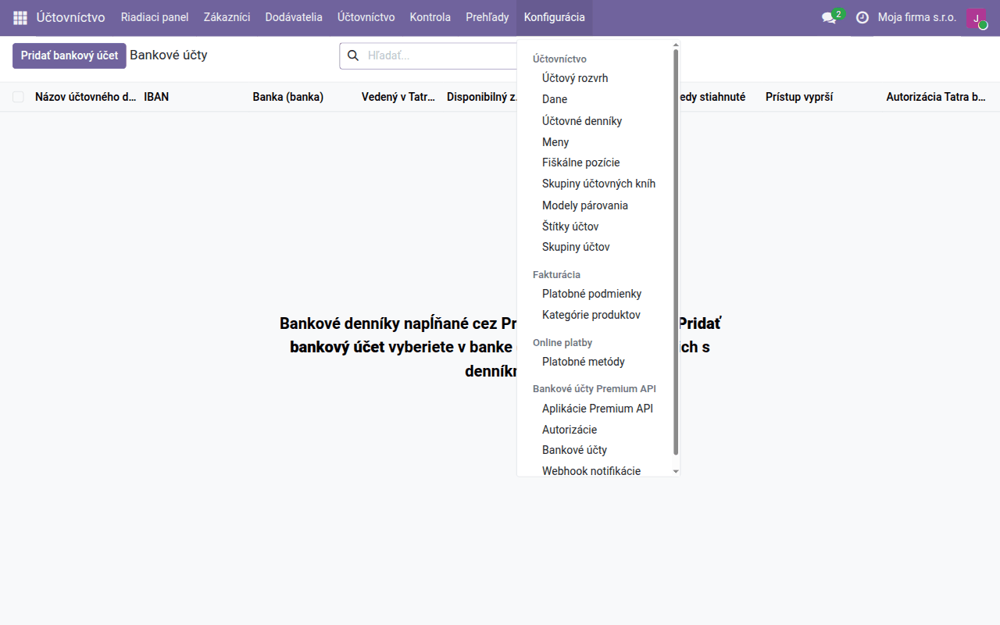
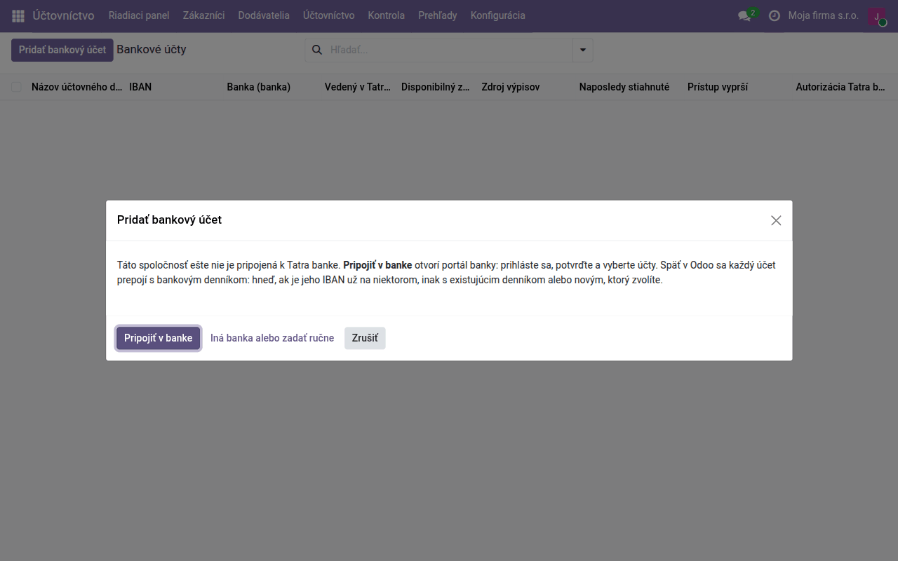
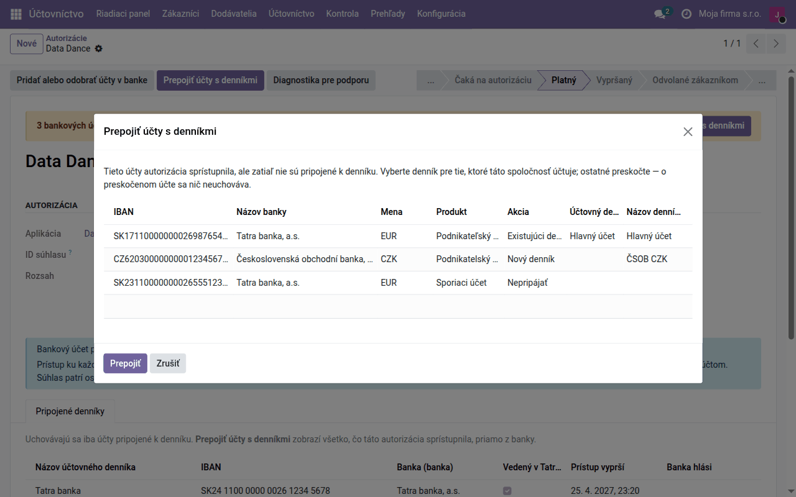
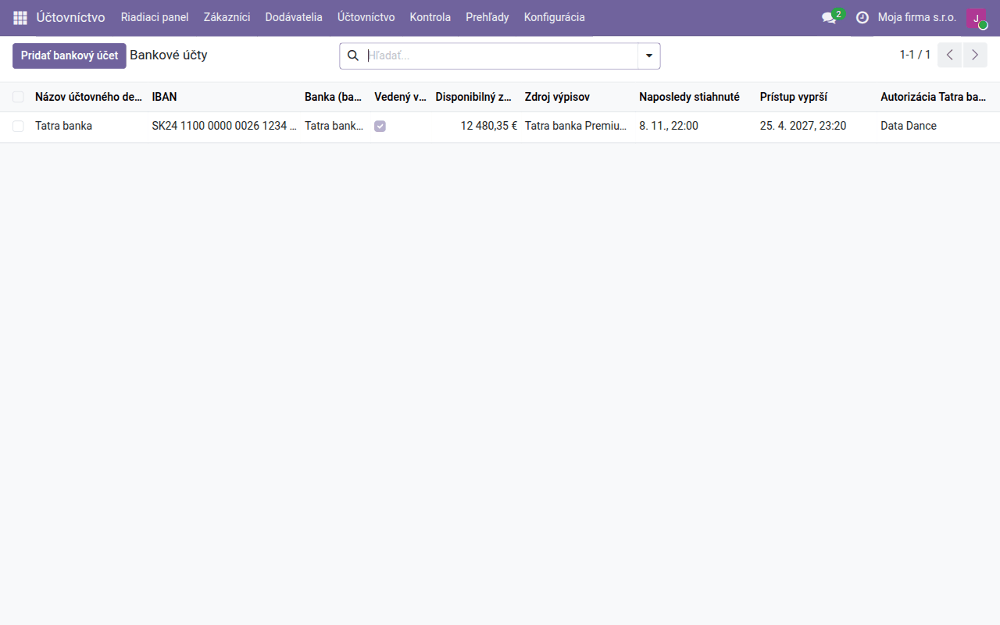
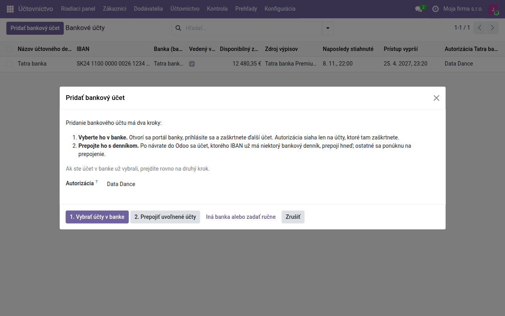
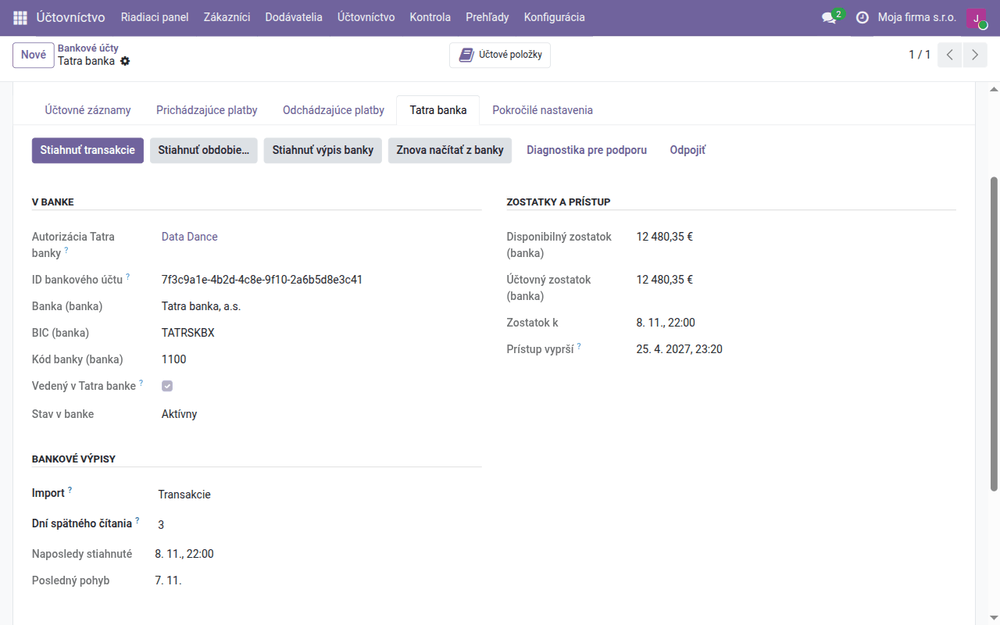

Návod k úlohe
Automatické bankové výpisy
Pohyby z vašich účtov v slovenských a českých bankách prichádzajú do Odoo samy každú hodinu, cez Premium API Tatra banky. Len v platenej hostovanej službe Data Dance.
| Krajina | Česko a Slovensko |
|---|---|
| Edícia | Odoo Community |
| Zahŕňa | account_tatrabanka (dodáva sa samostatne), account_statement_tatrabanka (dodáva sa samostatne), account_tatrabanka_webhook (dodáva sa samostatne), l10n_cssk_payment_symbols, l10n_cssk_payment_symbols_oca |
Len v platenej hostovanej službe Data Dance. Pripojenie zapína náš tím; mimo hostovanej služby nie je dostupné.
Na čo slúži tento návod
S týmto pripojením sa bankový denník plní sám: Odoo sa každú hodinu opýta banky na nové pohyby a vytvorí z nich riadky výpisu s menom a účtom protistrany, variabilným, konštantným a špecifickým symbolom a správou pre príjemcu. Netreba nič sťahovať z internetbankingu ani importovať. Riadky sa potom párujú rovnako ako z importovaného výpisu, ako opisuje návod Bankové účty.
Premium API Tatra banky pripojí vaše účty v slovenských a českých bankách, nielen v Tatra banke.
Kto má k čomu prístup
- Súhlas dávate vy, priamo v banke. Na portál banky sa prihlásite svojimi údajmi a sami vyberiete, ktoré účty sprístupníte. Prihlasovacie údaje do internetbankingu nezadávate do Odoo ani nám.
- Pohyby idú z banky rovno do vášho Odoo. Služba Data Dance cez ne neprechádza a neukladá ich.
- My vaše účty nevidíme. Služba Data Dance zabezpečuje len pripojenie k banke. Prístup, ktorý udelíte, je uložený zapečatený a bez vášho Odoo sa k vašim účtom ani pohybom nedostaneme.
- Súhlas môžete kedykoľvek odvolať v Odoo alebo priamo v banke.
Pripojenie
Začína sa v Účtovníctvo → Konfigurácia → Bankové účty Premium API → Bankové účty.

-
Kliknite na Pridať bankový účet. Kým firma nie je s bankou spojená, ponúkne sa jediné tlačidlo, Pripojiť v banke: autorizácia sa vytvorí sama a hneď sa otvorí portál banky. Sem vedie aj tlačidlo nastavenia banky na riadiacom paneli. Účet v banke, ktorú Premium API nepripája, zadáte tlačidlom Iná banka alebo zadať ručne.

-
Na portáli banky sa prihlási osoba, ktorá má k účtom aspoň pasívne práva do internetbankingu, a označí účty, ktoré sprístupní. Dokončite to do 30 minút. Jednotlivé obrazovky portálu opisuje používateľský manuál Tatra banky (PDF).
-
Späť v Odoo sa bankový denník, ktorého číslo účtu je presne sprístupnený IBAN, pripojí sám, a skončíte v zozname Bankové účty. Ak niektorý účet denník nemá, Odoo vás pošle do autorizácie: tlačidlom Prepojiť účty s denníkmi mu priradíte Existujúci denník, Nový denník alebo Nepripájať a kliknete na Prepojiť. Odoo pri každom účte voľbu navrhne.


-
Otvorte pripojený denník a na karte Účtovné záznamy nastavte Bankové pohyby na Tatra banka Premium API. Na karte Tatra banka zvoľte Import: Transakcie, alebo Transakcie + mesačné výpisy (jeden výpis za mesiac, napríklad
TBSK 2026-10), a kliknite na Stiahnuť transakcie.
Odvtedy sa transakcie sťahujú každú hodinu; tlačidlom Stiahnuť obdobie… doplníte staršie (15 mesiacov dozadu pri účtoch v Tatra banke, 13 pri účtoch v iných bankách). Importujú sa len zaúčtované pohyby.
Ďalší bankový účet
Autorizácia siaha len na účty zaškrtnuté v banke. Ďalší účet pridáte v tom istom zozname Bankové účty tlačidlom Pridať bankový účet: 1. Vybrať účty v banke otvorí portál banky, kde účet zaškrtnete, a 2. Prepojiť uvoľnené účty ho po návrate priradí k denníku.

Súhlas platí 180 dní a patrí osobe, ktorá ho udelila. Dva týždne pred koncom dostane autorizácia aktivitu Prístup do Tatra banky vyprší …; súhlas obnovíte tlačidlom Pridať alebo odobrať účty v banke v autorizácii (Bankové účty Premium API → Autorizácie), denníky zostanú pripojené. Ak osoba so súhlasom odchádza, nechajte autorizovať niekoho iného skôr, než odíde.
Kontrola
- V zozname Bankové účty vidíte pri každom účte disponibilný zostatok, Naposledy stiahnuté a kedy prístup vyprší.
-
Na karte Tatra banka denníka sú v časti Bankové výpisy polia Naposledy stiahnuté a Posledný pohyb.

-
Zlyhané sťahovanie sa zapíše do histórie denníka s dôvodom od banky; ostatné denníky sa stiahnu aj tak.
- Na konci mesiaca porovnajte konečný zostatok v Odoo so zostatkom vo výpise banky, ako v návode Bankové účty — zostatky mesačných výpisov sa počítajú z riadkov, nie preberajú z banky.
Zaúčtovanie riadkov a párovanie sa nemení: opisuje ho návod Bankové účty.